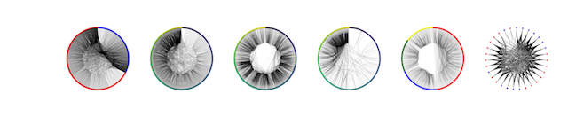

I taught myself graph theory in graduate school, as a tool for analyzing influenza evolutionary trajectories. Borrowing the theme of Allen Downey's "X Made Simple" series, I have started my own Network Analysis Made Simple series of Jupyter notebooks, to share this knowledge freely with everybody.
Learn More: Notebooks
Based on material from my Network Analysis Made Simple tutorial, I have created two courses on DataCamp titled Network Analysis with Python.
Learn More: DataCamp's Website
As part of my time at Insight, I led mini-workshops on web development and Bokeh, Pythonic code style & code linting, and co-led mini-workshops on deep learning.
Here's a collection of repositories that were involved in teaching this:
After two PyCons and one SciPy conference, I became convinced of the need to apply software engineering principles to data analytics. One theme that I identified was the need for the practice of (semi-)automated data checks. After meeting with Renee Chu at PyCon 2016, we are collaborating on developing tutorial material to teach how to write data and unit tests.
Learn More: Notebooks
I had noticed a growing interest in the use of machine learning (ML) to answer tough biological questions at the Broad Institute. During graduate school, I had taught myself the practical aspects of ML through the scikit-learn API; I found it to be a great introductory path into machine learning. In collaboration with Andres Colubri, David Dao and Jane Hung (Broad Institute), we put together a workshop for members of the Broad Community, with the materials freely available.
Learn More: Notebooks